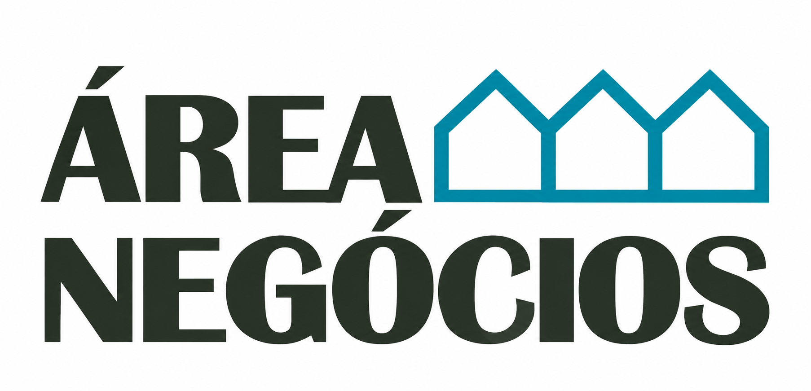

✓
Consultoria | Auditoria
Diagnóstico, definição de planos de ação e auditorias para a melhoria da Qualidade, Ambiente e Segurança, adaptados à realidade da sua organização.

Soluções práticas e independentes para melhorar o desempenho, reduzir riscos e gerar valor no seu negócio.
Diagnóstico, definição de planos de ação e auditorias para a melhoria da Qualidade, Ambiente e Segurança, adaptados à realidade da sua organização.
Disponibilizamos recursos qualificados para reforçar a capacidade operacional da sua empresa, com flexibilidade e orientação para resultados. Efetuamos também triagem, inspeção, muros da qualidade e montagens de componentes.
Estudos de benchmarking, Cliente Mistério e análise comparativa de produtos, serviços e preços para apoiar a tomada de decisão e o posicionamento competitivo.
Consulte o blog da Área Negócios, com conteúdos sobre Qualidade, gestão organizacional, melhoria contínua e outros temas relevantes para a gestão empresarial.
A Área Negócios apoia empresas de Aveiro e da Região Centro, disponibilizando serviços de Consultoria e Auditoria, Outsourcing e Inteligência de Mercado, com capacidade de intervenção noutras regiões do país.
Contacte-nos para analisarmos as necessidades da sua organização.
Área Negócios · Aveiro · Portugal